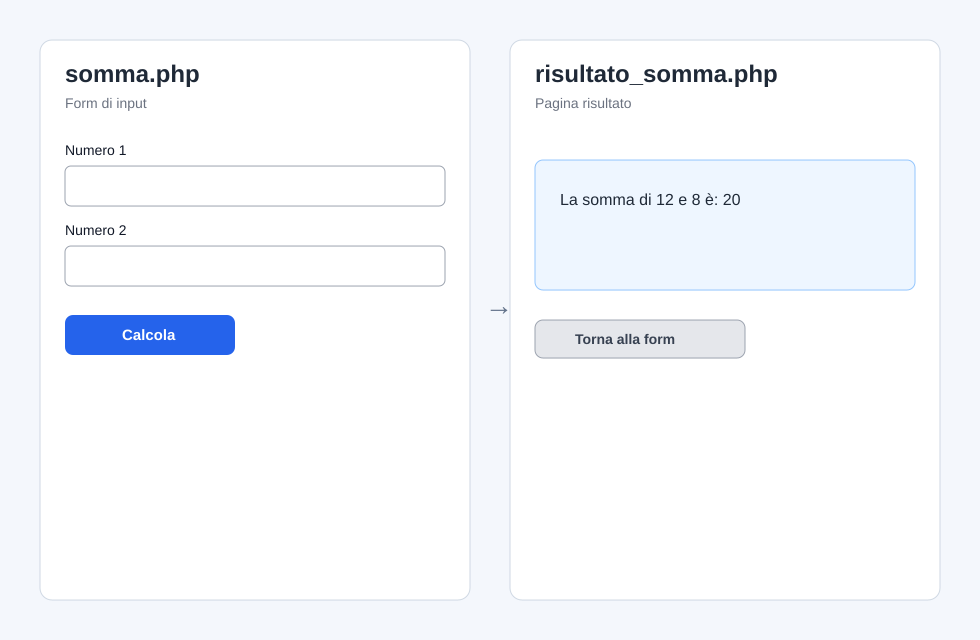
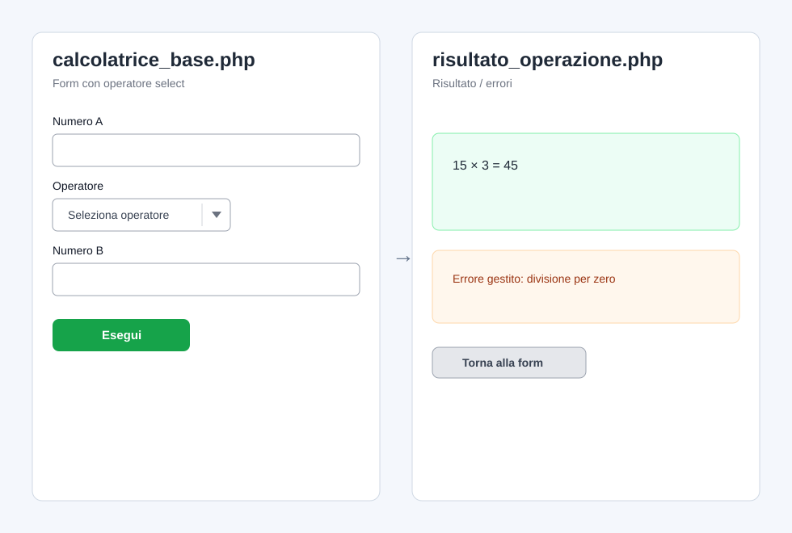
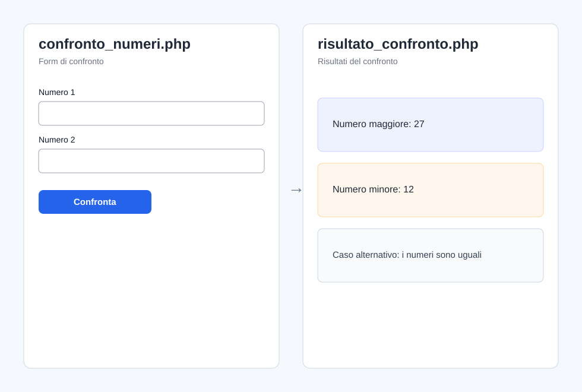
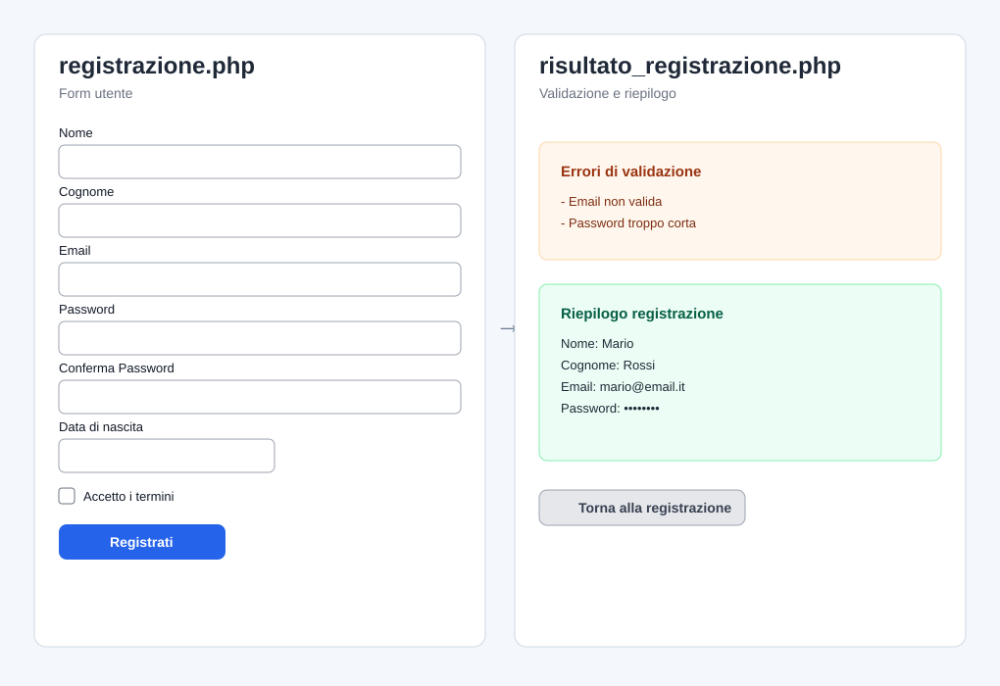
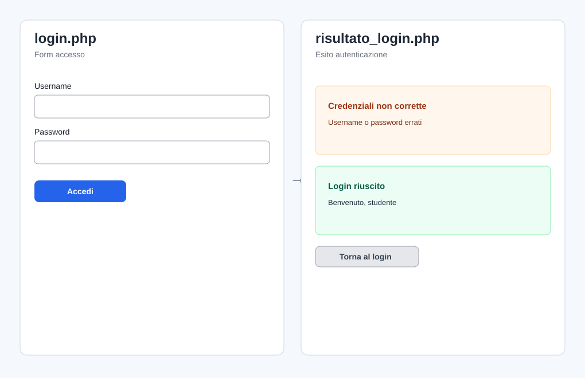
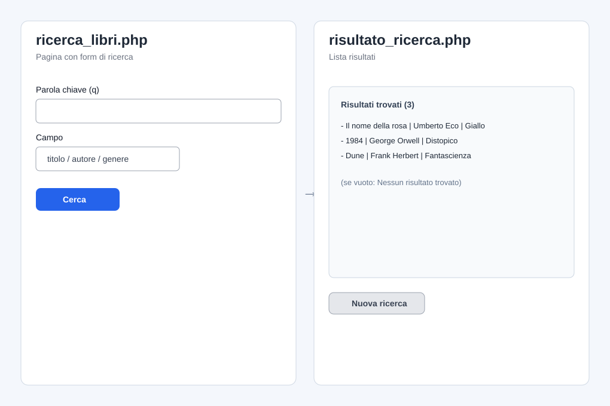
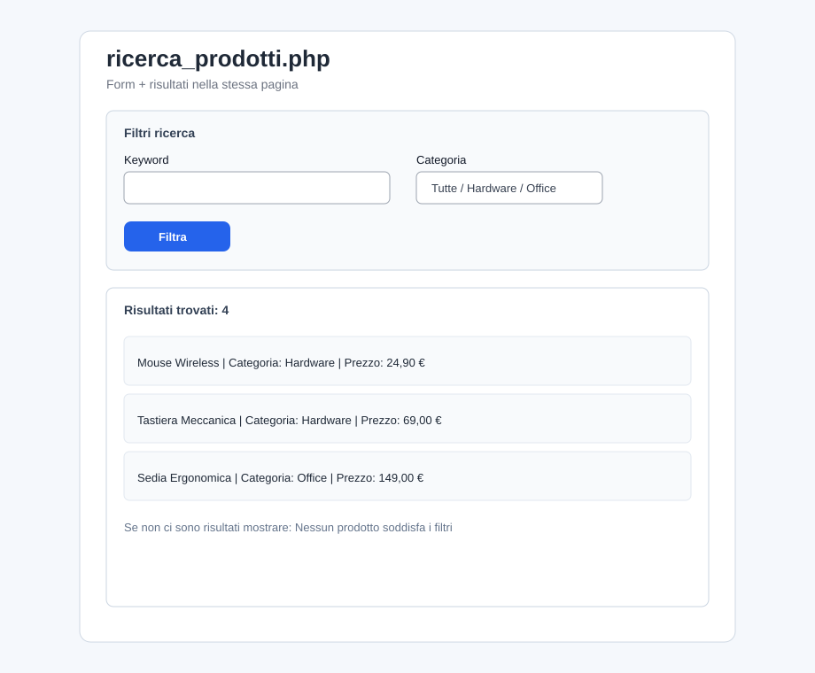

POST e GET<!DOCTYPE html><html lang="it"><meta charset="UTF-8"><meta name="viewport" content="width=device-width, initial-scale=1.0">Livello: ⭐ Principiante
Argomenti: form HTML, POST, conversione numerica, output base
Scenario:
Realizza una form in somma.php che invia i dati a risultato_somma.php, dove viene calcolata e mostrata la somma.
Consegna:
1. Crea in somma.php una form con campi numero1 e numero2 (tipo number) e pulsante Calcola.
2. Imposta action="risultato_somma.php" e metodo POST.
3. In risultato_somma.php, recupera i due valori e calcola la somma.
4. Mostra il risultato con una frase chiara (es. La somma è: ...).
5. Gestisci il caso di campi vuoti con un messaggio di errore semplice nella pagina risultato.
Rendering atteso (esempio):

Livello: ⭐⭐ Intermedio
Argomenti: POST, select, strutture condizionali if/switch
Scenario:
Realizza una form in calcolatrice_base.php che invia i dati a risultato_operazione.php, dove viene eseguito il calcolo.
Consegna:
1. Crea una form con:
- numero1 (number)
- operatore (select con opzioni +, -, *, /)
- numero2 (number)
- pulsante Esegui
2. Imposta action="risultato_operazione.php" e metodo POST.
3. In risultato_operazione.php, usa if/elseif oppure switch per eseguire l'operazione selezionata.
4. Mostra il risultato in formato: a operatore b = risultato.
5. Gestisci la divisione per zero con messaggio dedicato nella pagina risultato.
Rendering atteso (esempio):

Livello: ⭐⭐ Intermedio
Argomenti: confronto numerico, if/else, output multiplo
Scenario:
Realizza una form in confronto_numeri.php che invia i dati a risultato_confronto.php, dove vengono mostrati maggiore e minore.
Consegna:
1. Crea in confronto_numeri.php una form con due campi numerici (n1, n2) e pulsante Confronta.
2. Imposta action="risultato_confronto.php" e metodo POST.
3. In risultato_confronto.php, confronta i due valori e mostra:
- numero maggiore
- numero minore
4. Se i due numeri sono uguali, mostra un messaggio specifico (I numeri sono uguali).
5. Presenta i risultati nella pagina risultato in modo leggibile.
Rendering atteso (esempio):

Livello: ⭐⭐ Intermedio
Argomenti: form HTML, POST, validazione server-side, output condizionale
Scenario:
Realizza una form in registrazione.php che invia i dati a risultato_registrazione.php, dove avvengono validazione e riepilogo.
Campi richiesti:
1. Nome (text)
2. Cognome (text)
3. Email (email)
4. Password (password)
5. Conferma password (password)
6. Data di nascita (date)
7. Checkbox accettazione termini
Consegna:
1. Crea in registrazione.php la form con metodo POST, pulsante Registrati e action="risultato_registrazione.php".
2. In risultato_registrazione.php, valida in PHP che:
- tutti i campi testuali siano compilati;
- email contenga un formato valido;
- password sia lunga almeno 8 caratteri;
- password e conferma password coincidano;
- checkbox dei termini sia selezionata.
3. Se ci sono errori, mostra un elenco di errori in alto nella pagina risultato.
4. Se non ci sono errori, mostra un riepilogo dei dati inseriti (senza stampare la password in chiaro).
5. Aggiungi nella pagina risultato un link Torna alla registrazione verso registrazione.php.
Vincoli didattici:
- Non usare librerie esterne.
- Non usare sessioni in questo esercizio.
Rendering atteso (esempio):

Livello: ⭐⭐ Intermedio
Argomenti: autenticazione base, confronto credenziali, postback su stessa pagina
Scenario:
Realizza una form in login.php che invia i dati a risultato_login.php, dove viene effettuato il controllo credenziali su dati hardcoded.
Credenziali di test (hardcoded):
- Username: studente
- Password: php12345
Consegna:
1. Crea in login.php una form con campi username e password, metodo POST, pulsante Accedi e action="risultato_login.php".
2. In risultato_login.php, confronta i dati inseriti con le credenziali hardcoded.
3. Se username/password sono errati, mostra un messaggio di errore evidente.
4. Se le credenziali sono corrette, mostra un messaggio di login riuscito con il nome utente.
5. Inserisci nella pagina risultato un link Torna al login verso login.php.
6. Aggiungi un contatore tentativi usando una variabile $_SESSION (facoltativo bonus).
Vincoli didattici:
- Niente database.
- Risultato visualizzato su pagina separata (risultato_login.php).
Rendering atteso (esempio):

Livello: ⭐⭐⭐ Avanzato
Argomenti: form GET, passaggio parametri in URL, separazione pagina input/risultato
Scenario:
Implementa una ricerca di libri su un elenco predefinito.
File richiesti:
- ricerca_libri.php (pagina con form)
- risultato_ricerca.php (pagina che elabora e mostra risultati)
Dataset minimo (array in PHP):
Almeno 8 libri, ciascuno con:
- titolo
- autore
- genere
Consegna:
1. In ricerca_libri.php, crea una form con:
- input testuale q (parola da cercare)
- select campo con opzioni: titolo, autore, genere
- submit Cerca
2. Invia i dati con metodo GET a risultato_ricerca.php.
3. In risultato_ricerca.php:
- recupera q e campo;
- cerca in modo case-insensitive nel dataset;
- mostra lista dei risultati trovati.
4. Se non ci sono risultati, mostra messaggio: Nessun risultato trovato.
5. In fondo alla pagina risultato, inserisci link Nuova ricerca che torna a ricerca_libri.php.
Vincoli didattici:
- Nessun uso di database.
- Nessun uso di AJAX.
Rendering atteso (esempio):

Livello: ⭐⭐⭐ Avanzato
Argomenti: postback/refresh classico, rendering condizionale nello stesso file
Scenario:
Crea una pagina unica ricerca_prodotti.php che contiene sia form sia risultati.
Dataset minimo (array in PHP):
Almeno 10 prodotti, ciascuno con:
- nome
- categoria
- prezzo
Consegna:
1. Crea la form nella stessa pagina con:
- input keyword
- select categoria con opzione Tutte + categorie presenti
- submit Filtra
2. Usa metodo GET (oppure POST, a scelta) verso la stessa pagina.
3. Quando la pagina viene inviata:
- filtra i prodotti per parola chiave nel nome;
- applica il filtro categoria se diversa da Tutte;
- mostra i risultati sotto la form, nella stessa pagina.
4. Visualizza il numero totale di risultati trovati.
5. Se nessun prodotto soddisfa i filtri, mostra un messaggio dedicato.
6. Mantieni i valori selezionati nella form dopo l'invio.
Vincoli didattici:
- Nessuna chiamata AJAX.
- Nessun cambio pagina per mostrare i risultati.
Rendering atteso (esempio):

GET/POST in base alla consegna